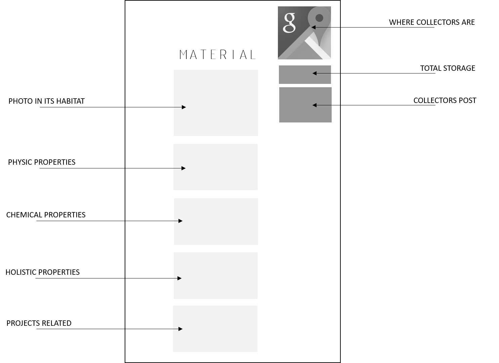
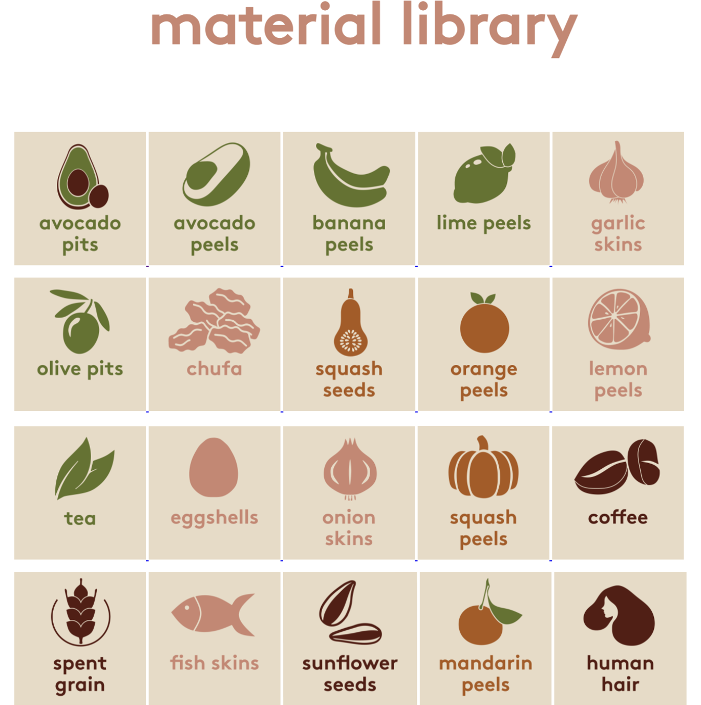

SPOT 2: MDEF CLASSROMM
After the speech of the Firt Intervention, Julia and Phippa appeared as a waste-group-of-collectors for the fab challenge and the WASTE-CONTAINER was install in the classroom, and also we have the idea to create a web for the community of waste in barcelona.
Website
+ List of materials we collect.
+ Each material might have:
- Recipes or link.
- Fisical or chemical properties or link.
- Holistic references or link.
- References or projects.
- Links to articles.
- Amount in weight and where is it.
+ Possibility of bartering.
+ All members in the community are able to post.

